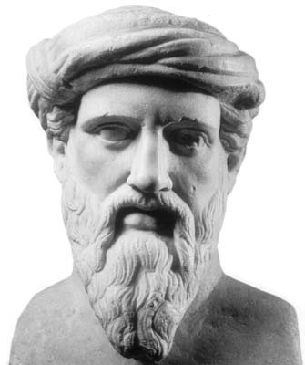

Pitagora
Pitagora (Samo, 570 a.C. circa – Metaponto, 495 a.C. circa) è stato un filosofo greco antico. Fu matematico, taumaturgo, astronomo, scienziato, politico e fondatore a Crotone di una scuola iniziatica secondo quanto tramandato dalla tradizione.
Viene ricordato come fondatore storico della scuola a lui intitolata, nel cui ambito si svilupparono le conoscenze matematiche e le sue applicazioni come il noto teorema di Pitagora. Il suo pensiero ha avuto comunque importanza per lo sviluppo della scienza occidentale, perchè ha intuito per primo l'efficacia della matematica per descrivere il mondo.

Home